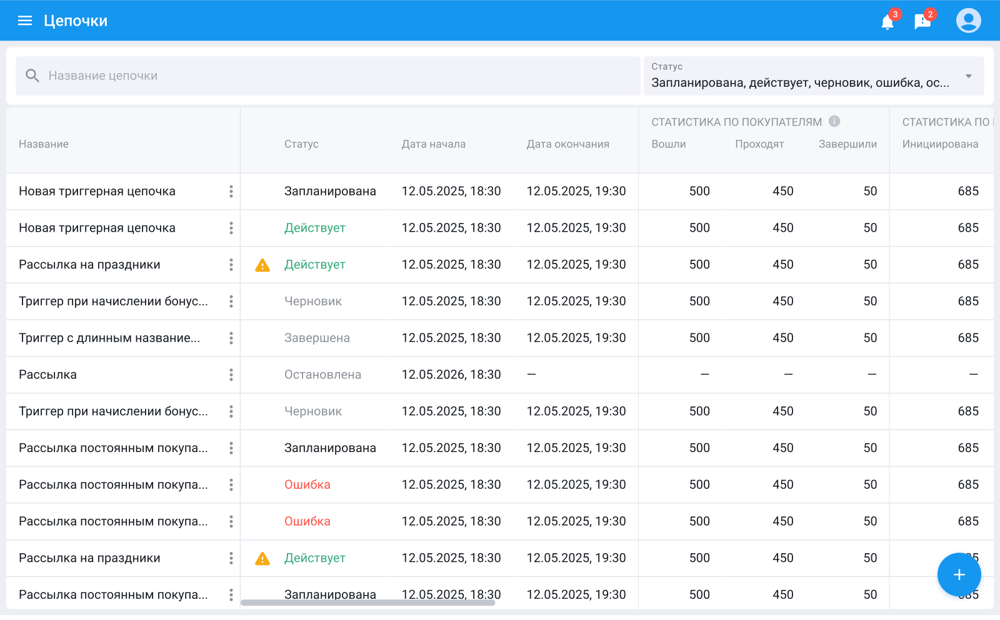
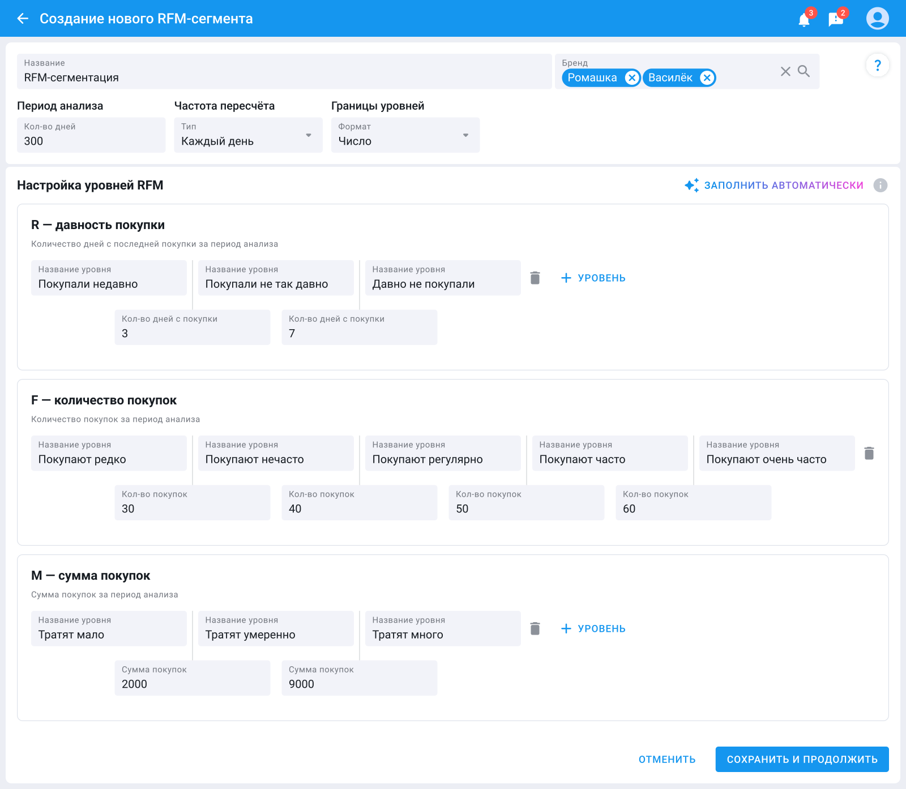
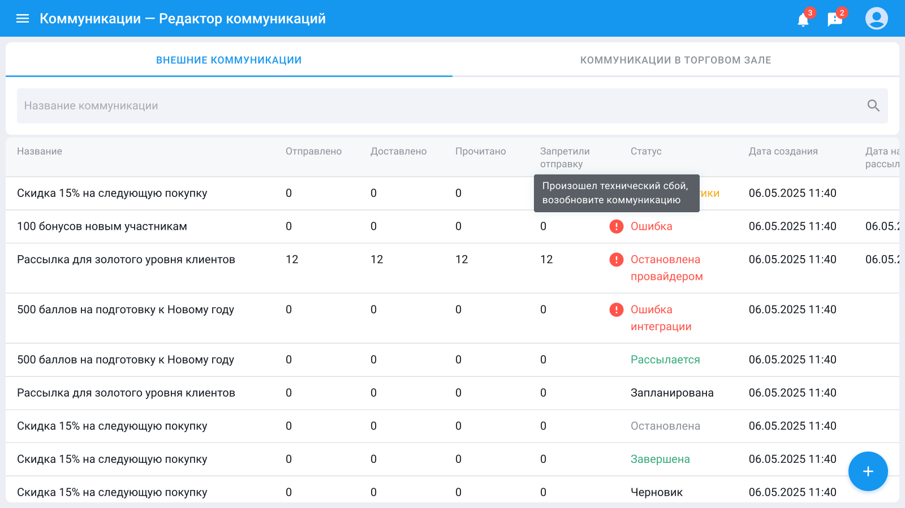
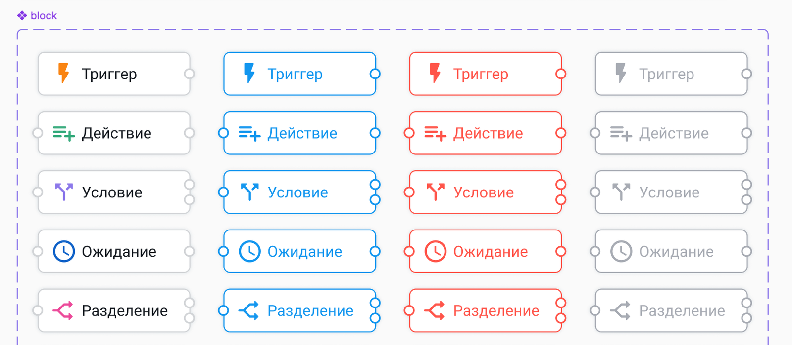

Set Loyalty
Ведущий продуктовый дизайнер B2B-платформы лояльности для ритейла. Исследую задачи клиентов и развиваю продукт: сегментацию, акции, купоны, коммуникации и триггерные цепочки.



Веду дизайн от задачи клиента до релиза
- Продукт
- Инструменты маркетолога для работы с покупателями: аудитории, механики лояльности, персональные коммуникации и оценка результатов.
- Моя зона ответственности
- UX-исследования, CJM и сценарии, гипотезы и прототипы, дизайн новых модулей, дизайн-система, редакционная политика и дизайн-ревью реализации.
Что развивала в продукте
- Сегментация покупателей. Настройка условий и RFM-сегментов, распределение покупателей по группам и работа с выбранной аудиторией.
- Акции, бонусы и купоны. Маркетинговые механики: параметры акции, правила начисления и списания бонусов, выдача и применение купонов.
- Триггерные цепочки и коммуникации. Разработала конструктор, в котором маркетолог собирает сценарии взаимодействия с покупателями и задаёт условия переходов.
- A/B-тесты и аналитика. Проверка маркетинговых гипотез на тестовых и контрольных группах: разные рассылки, бонусные предложения и сравнение поведения покупателей.
- Общие стандарты продукта. Единые компоненты, паттерны взаимодействия, терминология и правила интерфейсных текстов.
Что исследовала
Проводила UX-исследования с клиентами и проверяла, как маркетологи решают задачи в платформе: собирают аудиторию, настраивают механику лояльности, запускают коммуникацию и оценивают её результат.
Использовала интервью, юзабилити-тесты, проверку прототипов и коридорные тесты. Строила CJM и описывала пользовательские сценарии, чтобы связать отдельные экраны в последовательный путь.
- Работа с аудиторией. Насколько понятны условия сегментации, настройки RFM и распределение покупателей по группам.
- Настройка механик. Как пользователь выбирает параметры акции, бонусного предложения или коммуникации и ориентируется в зависимостях между настройками.
- Сборка сценария. Понятны ли назначение блоков, связи между ними и переход от черновика к запущенной цепочке.
Результаты исследований использовала при уточнении сценариев, структуры экранов, названий и поведения компонентов. Проверяла гипотезы на прототипах и возвращалась к решению после тестирования.
Как разрабатывала функциональность
Задача и контекст
С продактом и аналитиками разбирала цель клиента, бизнес-правила и ограничения продукта. Определяла, кому нужен сценарий и какой результат он должен дать.
Исследование и сценарии
Изучала работу пользователей, собирала CJM и описывала основной путь, альтернативные действия и состояния. На этой основе формулировала гипотезы решения.
Прототип и проверка
Собирала прототипы и проверяла их в юзабилити- и коридорных тестах. Уточняла последовательность действий, состав настроек и формулировки до передачи в разработку.
Детальная проработка
Проектировала интерфейс, состояния и поведение компонентов. Согласовывала решение с аналитиками и разработчиками, связывала новые сценарии с существующими модулями и дизайн-системой.
Реализация и развитие
Сопровождала разработку, обсуждала пограничные случаи с командой и тестировщиками, проводила дизайн-ревью. После запуска участвовала в проверке гипотез и дальнейшем развитии функциональности.
Аудитории и коммуникации
На актуальных макетах — настройка RFM-сегментации, распределение микросегментов и раздел коммуникаций. Эти сценарии связывают подготовку аудитории с выбором маркетингового воздействия.



Конструктор триггерных цепочек
Разработала конструктор для маркетолога: он задаёт событие покупателя и собирает дальнейший сценарий из блоков, настраивает их параметры и связи. Конструктор включает триггеры, действия, условия, ожидание и разделение аудитории.
Проработала создание черновика, редактирование цепочки и переходы между состояниями. Сценарий можно разветвить в зависимости от условий и запустить разные коммуникации для выбранных групп покупателей.

Маркетинговые гипотезы и A/B-тесты
Маркетолог делит аудиторию на сравниваемые группы и задаёт воздействие для каждой: например, отправляет разные рассылки или начисляет бонусы. Контрольная группа помогает оценить, как меняется поведение покупателей без этого воздействия.
Проектировала настройку групп и долей, параметры теста и представление результатов. Цель сценария — связать гипотезу с конкретной механикой и последующей оценкой поведения покупателей.
Пример сценария
Какая механика возвращает покупателей?
Сравнение повторных покупок и других целевых действий
Дизайн-система
Развивала дизайн-систему продукта: поля, выбор значений, действия, таблицы, статусы и состояния блоков. Общие паттерны помогают последовательно развивать разные модули и сохранять знакомое поведение интерфейса.


Редакционная политика
Разработала редакционную политику продукта: единые названия сущностей, терминологию, подписи действий, подсказки и системные сообщения. Правила связывают интерфейсные тексты с задачей пользователя и состоянием системы.
Применяла их при проектировании новых модулей и на дизайн-ревью: проверяла последовательность формулировок, понятность действий и согласованность текстов между экранами.